BMW Flugmotorenbau GmbH
BMW IV
24,00€
 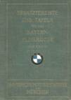
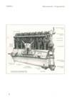
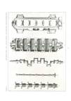
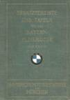
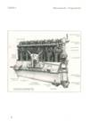
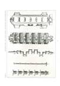
Dateigröße: 12 MB
Ersatzteil-Liste und Tafeln für den 260 PS Flugmotor, 1926, 62 Seiten
Bestell-Nr.: LAH-473
BMW Va
29,00€

 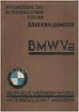
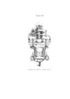
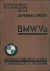
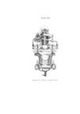
Dateigröße: 30 MB
Beschreibung und Betriebsanleitung, 1928, 120 Seiten
Bestell-Nr.: LAH-480
BMW VI
49,00€

 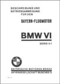
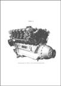
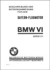
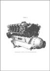
Dateigröße: 312 MB
Kompendium, gesamt 780 Seiten, bestehend aus:
BMW VI, Ersatzteilliste, Tafeln, 1928
BMW VI, Beschreibung und Bedienungsanleitung, 1928
BMW VI, Serie 3 und 4, Beschreibung, Betriebsanleitung, 1933
BMW VI, Serie 5/1, Beschreibung, Betriebsanleitung, 1933
BMW 6, Baureihe 6 und 7, Beschreibung, Betriebsanleitung, 1934
BMW 6, Baureihen 8 und 9, Beschreibung, Betriebsanleitung, 1936
BMW 6, Luftfahrt-Lehrbücherei, 1940
Bestell-Nr.: LAH-1042-1
BMW 132
49,00€


 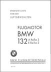
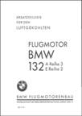
Dateigröße: 864 MB
Kompendium, gesamt 1.196 Seiten, bestehend aus:
BMW 132 Beschreibung u. Betriebsanleitung, 1934
BMW 132 A, T, Z BR3, und BMW 132 E, BR2, Motoren-Handbuch, 1941
BMW 132 A Reihe 3, E Reihe 2, T – Y – Z Reihe 3, Ersatzteilliste, 1942
BMW 132, A Reihe 3, E Reihe 2, Lehrmittel, 1939
BMW 132 Dc/1, Beschreibung und Betriebsanleitung, 1938
BMW 132 F - K - M - N - U - W, Ersatzteilliste, 1942
BMW 132 F, J, K, M, N Baureihen 1, Teil-Überholungsanleitung, LDv 866/2, 1939
BMW 132 H/1, Beschreibung und Betriebsanleitung, 1940
BMW 132 K, N Reihe 1, Betriebsanweisung zwecks Erprobung, 1939
Bestell-Nr.: LAH-1043-1
Flugmotor BMW 801 Kompendium
49,00€


 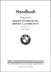
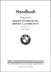
Dateigröße: 312 MB
Kompendium gesamt 1.380 Seiten, bestehend aus:
BMW 801 MA, ML, C und D, Handbuch, Teilüberholungs-Anleitung, 1942
BMW 801 A-1, Durchsichtbild-Darstellungen, D(Luft)T3801 A, 1941
BMW 801 MA und C, D und MG, Ersatzteilliste, 1943
BMW 801 A, C, D, G und L, Baureihen 1 und 2 Passungsliste, 1943
BMW 801, Einweisungsunterlage, 1942
BMW 801 MA, ML, MG, Motorenkarte, D(Luft T) 3801 MA, ML, MG, 1943
BMW 801 MA, MG und ML, C und D, Grundüberholungsanleitung, 1943
BMW 801 A, B, C, Gerät u. Sonder-Werkzeug für Teilüberholung, 1940
BMW 801 MA u. ML, Einbaumappe, 1942
BMW 801 A-C-D-G, Kommandogerät, 1943
Bestell-Nr.: LAH-1008-1